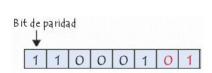
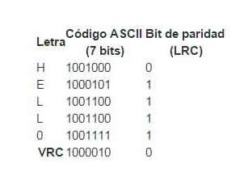

El medio de transmisión constituye el soporte físico a través del cual emisor y receptor pueden comunicarse en un sistema de transmisión de datos. Distinguimos dos tipos de medios: guiados no guiados. En ambos casos la transmisión se realiza por medio de ondas electromagnéticas. y Los medios guiados conducen (guían) las ondas a través de un camino físico, ejemplos de estos medios son el cable coaxial, la fibra óptica y el par trenzado. Los medios no guiados proporcionan un soporte para que las ondas se transmitan, pero no las dirigen; como ejemplo de ellos tenemos el aire y el vacío.
La naturaleza del medio junto con la de la señal que se transmite a través de él constituyen los factores determinantes de las características y la calidad de la transmisión. En el caso de medios guiados es el propio medio el que determina el que determina principalmente las limitaciones de transmisión: velocidad de transmisión de los datos, ancho de banda que puede soportar y espaciado entre repetidores. Sin embargo, al utilizar medios no guiados resulta más determinante en la transmisión el espectro de frecuencia de la señal producida por la antena que el propio medio de transmisión.
En los medios de transmisión guiados, la capacidad de transmisión, en términos de velocidad de transmisión o ancho de banda, depende drásticamente de la distancia y de si el medio se usa para un enlace punto a punto o por el contrario para un enlace multipunto, como, por ejemplo, en redes de área local (LAN).
El cable de par trenzado sin blindaje (UTP, Unshieled Twisted Pair) es el tipo más frecuente de medio de comunicación. Está formado por dos conductores, habitualmente de cobre, cada uno con su aislamiento de plástico de color, el aislamiento tiene un color asignado para su identificación, tanto para identificar los hilos específicos de un cable como para indicar qué cables pertenecen a un par dentro de un manojo.
El cable de par trenzado blindado (STP, Shieled Twister Pair) tiene una funda de metal o un recubrimiento de malla entrelazada que rodea cada par de conductores aislados. Esa carcasa de metal evita que penetre el ruido electromagnético y elimina un fenómeno denominado interferencia, que es el efecto indeseado de un canal sobre otro canal. El STP tiene las mismas consideraciones de calidad y usa los mismos conectores que el UTP, pero es necesario conectar el blindaje a tierra.
El cable coaxial transporta señales con rango de frecuencias más altos que los cables de pares trenzados. El cable coaxial tiene un núcleo conductor central formado por un hilo sólido o enfilado, habitualmente de cobre, recubierto por un aislante y material dieléctrico que, a su vez, está recubierto de una hoja exterior de metal conductor, malla o una combinación de ambos, también habitualmente de cobre. La cubierta metálica exterior sirve como blindaje contra el ruido y como un segundo conductor. Este conductor está recubierto por un escudo aislante, y todo el cable por una cubierta de plástico.
La fibra óptica está hecha de plástico o cristal y transmite las señales en forma de luz.
La fibra óptica utiliza la reflexión para transmitir la luz a través del canal. Un núcleo de cristal o plástico se rodea de una cobertura de cristal o plástico menos denso, la diferencia de densidades debe ser tal que el rayo se mueve por el núcleo reflejado por la cubierta y no refractado en ella.

Los medios no guiados o comunicación sin cable transportan ondas electromagnéticas sin usar un conductor físico, sino que se radian a través del aire, por lo que están disponibles para cualquiera que tenga un dispositivo capaz de aceptarlas.
Estas bandas cubren aproximadamente desde 55 a 550 MHz. Son también omnidireccionales, pero a diferencia de las anteriores la ionosfera es transparente a ellas. Su alcance máximo es de un centenar de kilómetros, y las velocidades que permite del orden de los 9600 bps. Su aplicación suele estar relacionada con los radioaficionados y con equipos de comunicación militares, también la televisión y los aviones.
Además de su aplicación en hornos, las microondas nos permiten transmisiones tanto terrestres como con satélites. Dada su frecuencia, del orden de 1 a 10 GHz, las microondas son muy direccionales y sólo se pueden emplear en situaciones en que existe una línea visual que une emisor y receptor. Los enlaces de microondas permiten grandes velocidades de transmisión, del orden de 10 Mbps.
Todos los medios de transmisión vistos hasta ahora se valen de una línea física para transportar la información transmitida. Sin embargo, los datos también pueden transmitirse por medio de ondas electromagnéticas (de radio) a través del espacio libre, como en los sistemas por satélite. Un haz de microondas colimado, sobre el cual se modulan los datos, se transmite al satélite desde la superficie terrestre. Este haz se recibe y retransmite (reenvía) al destino o destinos previamente determinados mediante un circuito a bordo del satélite denominado transpondedor. Cada satélite tiene muchos transpondedores, cada uno de los cuales cubre una banda de frecuencias determinada.
Un canal de satélite representativo tiene un ancho de banda extremadamente alto (500 MHz) y puede enlazar centenas de datos con alta tasa de bits mediante una técnica llamada multiplexión. En la sección 2.5.2 describiremos esto, pero digamos que, en esencia, la capacidad total disponible del canal se divide en varios subcanales, que pueden sustentar, cada uno, un enlace de alta tasa de bits.
Los infrarrojos son ondas electromagnéticas que se propagan en línea recta, siendo susceptibles de ser interrumpidas por cuerpos opacos. Su uso no precisa licencias administrativas y no se ve afectado por interferencias radioeléctricas externas, pudiendo alcanzar distancias de hasta 200 metros entre cada emisor y receptor.
¿Cuándo usar un medio de transmisión infrarrojo?
• Por lo general estas las podemos usar cuando la información que deseamos compartir no es muy pesada y está más dirigida a pequeños lugares como oficinas.
• Cuando la distancia es muy corta.
• Cuando no contamos a la mano con algún otro medio de transmisión ya sea Físico (Cable Trenzado, Cable Coaxial, Fibra Óptica) o no Físico (Infrarrojo, Radiofrecuencia, Microondas).
La verificación de paridad (a veces denominada VRC o verificación de redundancia vertical) es uno de los mecanismos de verificación más simples. Consiste en agregar un bit adicional (denominado bit de paridad) a un cierto número de bits de datos denominado palabra código (generalmente 7 bits, de manera que se forme un byte cuando se combina con el bit de paridad) cuyo valor (0 o 1) es tal que el número total de bits 1 es par. Para ser más claro, 1 si el número de bits en la palabra código es impar, 0 en caso contrario.
Tomemos el siguiente ejemplo:
En este ejemplo, el número de bits de datos 1 es par, por lo tanto, el bit de paridad se determina en 0. Por el contrario, en el ejemplo que sigue, los bits de datos son impares, por lo que el bit de paridad se convierte en 1:
El bit de paridad, en este caso, ya no corresponde al byte de paridad: se ha detectado un error. Sin embargo, si dos bits (o un número par de bits) cambian simultáneamente mientras se está enviando la señal, no se habría detectado ningún error.
Ya que el sistema de control de paridad puede detectar un número impar de errores, puede detectar solamente el 50% de todos los errores. Este mecanismo de detección de errores también tiene la gran desventaja de ser incapaz de corregir los errores que encuentra (la única forma de arreglarlo es solicitar que el byte erróneo sea retransmitido).
La verificación de la redundancia longitudinal (LRC, también denominada verificación de redundancia horizontal) no consiste en verificar la integridad de los datos mediante la representación de un carácter individual, sino en verificar la integridad del bit de paridad de un grupo de caracteres.
Digamos que "HELLO" es el mensaje que transmitiremos utilizando el estándar ASCII. Estos son los datos tal como se transmitirán con los códigos de verificación de redundancia longitudinal:
La verificación de redundancia cíclica (abreviado, CRC) es un método de control de integridad de datos de fácil implementación. Es el principal método de detección de errores utilizado en las telecomunicaciones.
La verificación de redundancia cíclica consiste en la protección de los datos en bloques, denominados tramas. A cada trama se le asigna un segmento de datos denominado código de control (al que se denomina a veces FCS, secuencia de verificación de trama, en el caso de una secuencia de 32 bits, y que en ocasiones se identifica erróneamente como CRC). El código CRC contiene datos redundantes con la trama, de manera que los errores no sólo se pueden detectar, sino que además se pueden solucionar.
El problema a resolver con el control de flujo de datos o de congestión es que una entidad emisora no sobrecargue a otra receptora de datos. Esto puede suceder cuando la memoria reservada (buffer) en la recepción se desborda. El control de flujo no contempla en principio la existencia de errores de transmisión, sin embargo, a menudo se integra con del control de errores que se verá más adelante. Existen dos formas diferentes de hacer el control del flujo: control hardware y control software.
Un primer protocolo capaz de controlar la congestión muy simple es el conocido como de parada y espera o en términos más formales se conoce como Asentamiento. Únicamente para evitar desbordar al receptor, el emisor enviaría una trama y esperaría un acuse de recibo antes de enviar la siguiente. Este procedimiento resulta adecuado cuando hay que enviar pocas tramas de gran tamaño. Sin embargo, la información suele transmitirse en forma de tramas cortas debido a la posibilidad de errores, la capacidad de buffer limitada y la necesidad en algunos casos de compartir el medio.
La eficiencia de este sistema sería la proporción entre el tiempo empleado en transmitir información útil (Trama) y el tiempo total del proceso (Total). El primero sería igual al tamaño de la trama partido por la velocidad de transmisión del emisor.
Un mecanismo más sofisticado y muy empleado es el de la ventana deslizante. La ventana determina cuantos mensajes pueden estar pendientes de confirmación y su tamaño se ajusta a la capacidad del buffer del receptor para almacenar tramas. El tamaño máximo de la ventana está además limitado por el tamaño del número de secuencia que se utiliza para numerar las tramas.
Si las tramas se numeran con tres bits (en modulo 8, del 0 al 7), se podrán enviar hasta siete tramas sin esperar acuse de recibo y sin que el protocolo falle (tamaño de ventana = 2k-1). Si el número de secuencia es de 7 bits (modulo 128, del 0 al 127) se podrán enviar hasta 127 tramas si es que el buffer del receptor tiene capacidad para ellas. Normalmente, si el tamaño no es prefijado por el protocolo, en el establecimiento del enlace el emisor y receptor negociarán el tamaño de la ventana atendiendo a las características del elemento que ofrece menos prestaciones.
Consiste en utilizar líneas dispuestas para ese fin como las que tiene la conexión RS-232-C. Este método de control del flujo de transmisión utiliza líneas del puerto serie para parar o reanudar el flujo de datos y por tanto el cable de comunicaciones, además de las tres líneas fundamentales de la conexión serie: emisión, recepción y masa, ha de llevar algún hilo más para transmitir las señales de control.
En el caso más sencillo de que la comunicación sea en un solo sentido, por ejemplo, con una impresora, bastaría con la utilización de una línea más. Esta línea la gobernaría la impresora y su misión sería la de un semáforo. Por ejemplo, utilizando los niveles eléctricos reales que usa la norma serie RS-232-C, si esta línea está a una tensión positiva de 15 V. (0 lógico) indicaría que la impresora está en condiciones de recibir datos, y si por el contrario está a -15 V. (1 lógico) indicaría que no se le deben enviar más datos por el momento.
Si la comunicación es en ambos sentidos, entonces necesitaríamos al menos dos líneas de control, una que actuaría de semáforo en un sentido y la otra en el otro. Las líneas se han de elegir que vayan de una salida a una entrada, para que la lectura sea válida y además se debe tratar de utilizar las que la norma RS-232-C recomienda para este fin.
La otra forma de control del flujo consiste en enviar a través de la línea de comunicación caracteres de control o información en las tramas que indican al otro dispositivo el estado del receptor. La utilización de un control software de la transmisión permite una mayor versatilidad del protocolo de comunicaciones y por otra parte se tiene mayor independencia del medio físico utilizado. Así, por ejemplo, con un protocolo exclusivamente hardware sería bastante difícil hacer una comunicación vía telefónica, ya que las señales auxiliares de control se tendrían que emular de alguna manera.
Las formas más sencillas de control de flujo por software son el empleo de un protocolo como el XON/XOFF que se verá más adelante o como la espera de confirmación antes del envío mediante un ACK o similar como se indicaba en el ejemplo del protocolo de parada y espera.